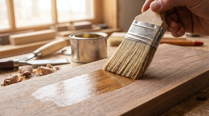
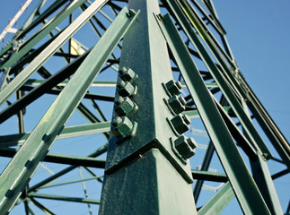
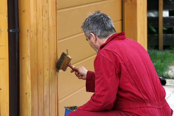
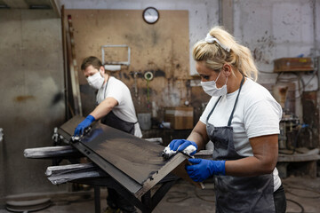

Lackierarbeiten an Holz und Metall
Fenster, Türen, Heizkörper, Geländer oder Holzfassaden: Mit der richtigen Vorbereitung und passendem Lack halten Bauteile wieder viele Jahre – innen wie außen.
Worum es geht

Ein sauberer Lack steht und fällt mit der Vorbereitung. Ohne gründliches Schleifen, Entrosten und Grundieren hält keine Beschichtung dauerhaft – egal wie gut der Lack ist. Wir lackieren Holz- und Metallbauteile innen und außen und beraten zur Lebensdauer, die je nach Wetterseite (Süd- oder Nordlage) und Beanspruchung sehr unterschiedlich ausfällt.
Für wen geeignet: Für Hausbesitzer und Mieter in Mannheim und Rhein-Neckar-Region: Fenster, Türen, Treppen und Geländer, Heizkörper, Zäune, Carports und Gartenhäuser – auch das Aufarbeiten vorhandener Möbel statt Neukauf.
Ihr Nutzen auf einen Blick
- Vorbereitung als Qualitätsfaktor: schleifen, entrosten, grundieren – darauf hält der Lack
- Lasur oder Deckfarbe – wir erklären den Unterschied an Ihrem konkreten Bauteil
- Realistische Einschätzung der Lebensdauer je nach Sonnen- und Wetterseite
Was wir konkret anbieten
Holzbauteile: Fenster, Türen, Treppen, Möbel
Holzfenster und -türen brauchen einen Lack, der mit dem Holz arbeitet. Wasserbasierte Lacke sind geruchsärmer und vergilben kaum, lösemittelhaltige sind in bestimmten Außensituationen widerstandsfähiger – wir wählen je nach Bauteil. Treppen, Geländer und Möbel arbeiten wir auf, statt sie zu ersetzen: oft die günstigere und nachhaltigere Lösung.
Metallbauteile: Heizkörper, Geländer, Zäune
Bei Metall entscheidet der Rostschutz über die Haltbarkeit. Wir entrosten, behandeln den Untergrund und grundieren, bevor wir lackieren. Heizkörper erhalten hitzebeständige Beschichtungen, Außengeländer und Zäune einen belastbaren Korrosionsschutz.
Holzschutz außen: Lasur oder Lack
Holzfassaden, Carports, Gartenhäuser und Zäune leben von UV- und Witterungsschutz. Der Unterschied ist einfach: Eine Lasur lässt die Maserung sichtbar und betont den Holzcharakter, eine deckende Farbe verschließt die Oberfläche vollständig und schützt etwas stärker vor Sonne. Wir beraten je nach gewünschter Optik und Lage.
Industrielackierung
Auf Anfrage beschichten wir Stahlkonstruktionen und Metallteile mit normgerechtem Korrosionsschutz – sprechen Sie uns auf Ihre konkrete Anwendung an.
Der Ablauf
Begutachtung
Zustand des Bauteils prüfen, Untergrund und passendes Lacksystem festlegen.
Vorbereitung / Schleifen
Alte Schichten anschleifen oder entfernen, Metall entrosten, Holz ausbessern.
Grundierung
Haftgrund bzw. Rostschutz auftragen – die Basis für Haltbarkeit.
Lackierung
Deckende Lackierung oder Lasur, sauber und gleichmäßig aufgetragen.
Beispiele aus unserer Arbeit



Jetzt Lackierarbeiten anfragen
Oder Angebot für Fensterlackierung anfordern. Wir besichtigen kostenlos und erstellen Ihnen ein verständliches Festpreisangebot.
Jetzt Lackierarbeiten anfragen Kurzfristig? ☎ 0621 1234567